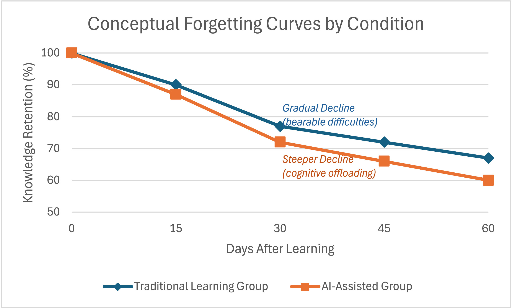

        <section class="slide orb-a" style="display:grid;grid-template-columns:1fr 1fr;padding:0;" data-n="[톤 낮춤, 에피소드처럼] 동시에 개인한테도 일이 생깁니다.

현업 과제의 프로세스 맵을 AI로 깔끔하게 만들었어요. 보기 좋습니다. 그런데 현업 팀장님이 이렇게 물어요. '이 단계가 왜 필요한 거죠?'

[잠시 멈춤] 'AI가 벤치마크 기반으로 제안한 거예요.' 팀장님이 다시 묻습니다. '그건 아는데, 우리 회사에서 이게 왜 필요한지 아세요?'

[잠시 멈춤, 청중 보기] 답을 못 합니다. 결과는 나왔는데 설명을 못 해요.

Barcaui라는 연구자가 이걸 측정했어요. AI로 학습한 사람은 45일 뒤에 57%만 기억합니다. 직접 고민해서 배운 사람은 69%를 기억하고요. 12%포인트 차이.

[킥] 작아 보이지만 현업에서는 '설명할 수 있느냐 없느냐'의 차이입니다. 결과를 만든 사람과 결과를 이해하는 사람은 다릅니다.">
                  <div class="layer-mid" style="background:radial-gradient(ellipse at 30% 50%,rgba(212,165,116,0.2) 0%,transparent 45%);"></div>
        
                  <!-- 좌측: 텍스트 -->
                  <div style="display:flex;flex-direction:column;justify-content:center;align-items:center;padding:48px 4vw;position:relative;z-index:1;">
                    <div class="tag">학습의 증발</div>
                    <h2 style="text-align:left;font-size:clamp(28px,3vw,44px);">결과는 나왔는데<br><span class="em">설명</span>을 못 한다</h2>
        
                    <!-- 대화 -->
                    <div style="margin:20px 0 0;max-width:460px;display:flex;flex-direction:column;gap:10px;">
                      <div style="font-size:12px;text-transform:uppercase;letter-spacing:.12em;color:var(--g500);margin-bottom:4px;">현업에서</div>
                      <!-- 팀장 1 -->
                      <div style="display:flex;align-items:flex-start;gap:10px;">
                        <div style="width:32px;height:32px;border-radius:50%;background:var(--copper);display:flex;align-items:center;justify-content:center;font-size:10px;font-weight:700;color:#0a0a0a;flex-shrink:0;">팀장</div>
                        <div style="background:rgba(212,165,116,.08);border:1px solid rgba(212,165,116,.15);border-radius:2px 12px 12px 12px;padding:10px 14px;font-size:clamp(14px,1.2vw,17px);color:var(--white);line-height:1.5;">"이 단계가 왜 필요한 거죠?"</div>
                      </div>
                      <!-- 크루 -->
                      <div style="display:flex;align-items:flex-start;gap:10px;justify-content:flex-end;">
                        <div style="background:rgba(255,255,255,.04);border:1px solid rgba(255,255,255,.08);border-radius:12px 2px 12px 12px;padding:10px 14px;font-size:clamp(14px,1.2vw,17px);color:var(--g400);line-height:1.5;">"AI가 벤치마크 기반으로 제안한 구조예요."</div>
                        <div style="width:32px;height:32px;border-radius:50%;background:rgba(255,255,255,.08);display:flex;align-items:center;justify-content:center;font-size:10px;font-weight:700;color:var(--g400);flex-shrink:0;">팀원</div>
                      </div>
                      <!-- 팀장 2 -->
                      <div style="display:flex;align-items:flex-start;gap:10px;">
                        <div style="width:32px;height:32px;border-radius:50%;background:var(--copper);display:flex;align-items:center;justify-content:center;font-size:10px;font-weight:700;color:#0a0a0a;flex-shrink:0;">팀장</div>
                        <div style="background:rgba(212,165,116,.08);border:1px solid rgba(212,165,116,.15);border-radius:2px 12px 12px 12px;padding:10px 14px;font-size:clamp(14px,1.2vw,17px);color:var(--white);line-height:1.5;font-weight:700;">"우리 회사에서 이게 왜 필요한지 아세요?"</div>
                      </div>
                      <!-- 크루 침묵 -->
                      <div style="display:flex;align-items:flex-start;gap:10px;justify-content:flex-end;">
                        <div style="background:rgba(255,255,255,.04);border:1px solid rgba(255,255,255,.08);border-radius:12px 2px 12px 12px;padding:10px 14px;font-size:clamp(16px,1.4vw,20px);color:var(--g500);line-height:1.5;">...</div>
                        <div style="width:32px;height:32px;border-radius:50%;background:rgba(255,255,255,.08);display:flex;align-items:center;justify-content:center;font-size:10px;font-weight:700;color:var(--g400);flex-shrink:0;">팀원</div>
                      </div>
                    </div>
        
                    <!-- 메모지 스타일 -->
                    <div style="margin-top:20px;position:relative;max-width:380px;">
                      <!-- 찢어진 상단 테이프 -->
                      <div style="position:absolute;top:-8px;left:50%;transform:translateX(-50%);width:60px;height:16px;background:rgba(212,165,116,.25);border-radius:2px;z-index:2;"></div>
                      <!-- 메모지 본체 -->
                      <div style="background: linear-gradient(170deg, rgb(42, 37, 24) 0%, rgb(30, 26, 20) 40%, rgb(26, 22, 16) 100%); border: 1px solid rgba(212, 165, 116, 0.15); border-radius: 3px; padding: 24px 22px 20px; box-shadow: rgba(0, 0, 0, 0.5) 0px 6px 24px, rgba(212, 165, 116, 0.04) 2px 3px 0px; transform: rotate(0.8deg); position: relative; width: 433px; height: 148px;">
                        <!-- 줄 무늬 (노트 라인) -->
                        <div style="position:absolute;top:40px;left:18px;right:18px;border-top:1px solid rgba(212,165,116,.06);"></div>
                        <div style="position:absolute;top:62px;left:18px;right:18px;border-top:1px solid rgba(212,165,116,.06);"></div>
                        <div style="position:absolute;top:84px;left:18px;right:18px;border-top:1px solid rgba(212,165,116,.06);"></div>
                        <!-- 텍스트 -->
                        <div style="font-family: &quot;Pretendard Variable&quot;, sans-serif; font-size: clamp(15px, 1.3vw, 19px); color: var(--white); line-height: 1.7; position: relative; z-index: 1;">
                          <strong style="color:var(--copper);">AI 학습 57%</strong> vs <strong style="color:var(--teal);">직접 학습 69%</strong><br>
                          <span style="color:var(--g400);font-size:clamp(13px,1.1vw,16px);">45일 후 유지율 — 12%p 차이가<br><em style="color:var(--copper);font-style:normal;text-decoration:underline;text-decoration-color:rgba(212,165,116,.3);text-underline-offset:3px;">"설명할 수 있느냐 없느냐"</em>를 가른다</span>
                        </div>
                      </div>
                    </div>
        
                    <div class="ref" style="position:static;margin-top:16px;">Barcaui, A. (2025). ChatGPT as a Cognitive Crutch.<br>Social Sciences &amp; Humanities Open.</div>
                  </div>

                  <!-- 우측: 논문 이미지 2장 겹침 -->
                  <div style="display:flex;align-items:center;justify-content:center;padding:48px 4vw;position:relative;z-index:1;border-left:1px solid var(--line);">
                    <div style="position:relative;width:100%;max-width:560px;height:520px;">
                      <div style="position:absolute;top:0;left:50%;transform:translateX(-55%) rotate(-1.5deg);width:88%;border-radius:var(--radius);overflow:hidden;box-shadow:0 8px 32px rgba(0,0,0,.6),0 0 0 1px rgba(255,255,255,.06);background:#fff;padding:6px;z-index:1;">
                        
                      </div>
                      <div style="position:absolute;bottom:0;left:50%;transform:translateX(-45%) rotate(1deg);width:90%;border-radius:var(--radius);overflow:hidden;box-shadow:0 12px 40px rgba(0,0,0,.7),0 0 0 1px rgba(255,255,255,.08);background:#fff;padding:6px;z-index:2;">
                        
                      </div>
                    </div>
                  </div>
                </section>
